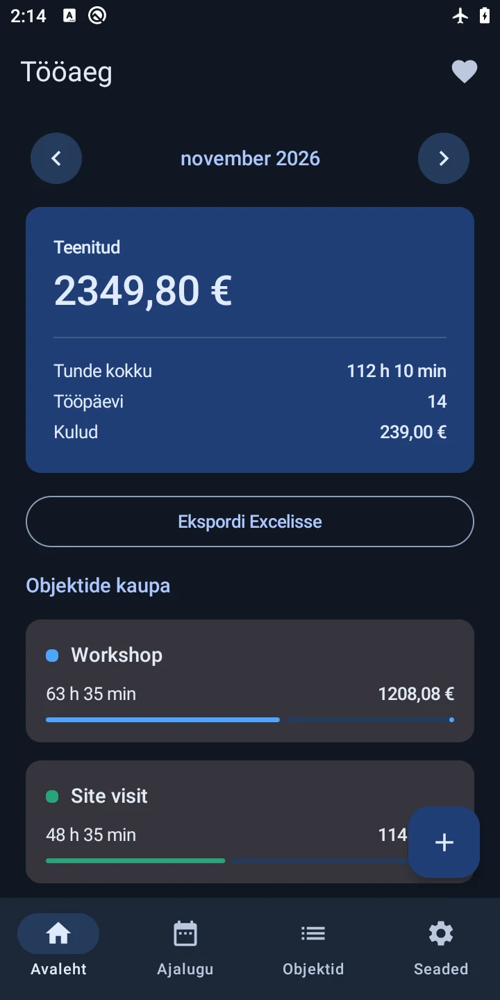
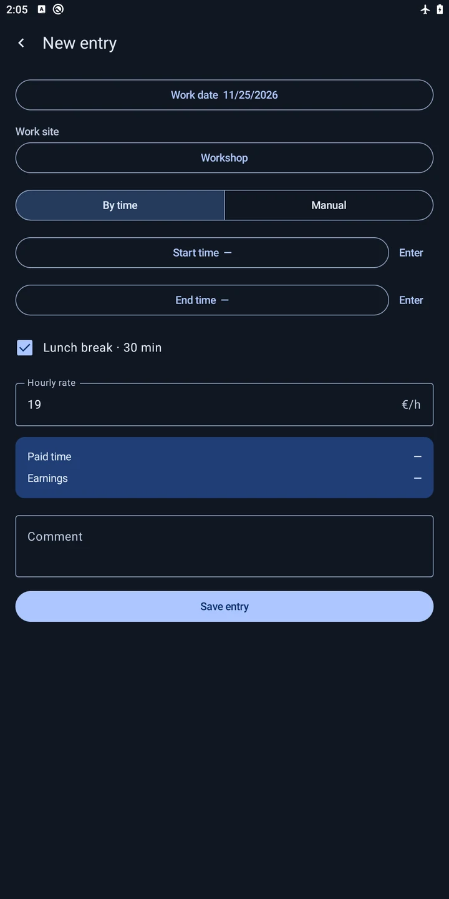
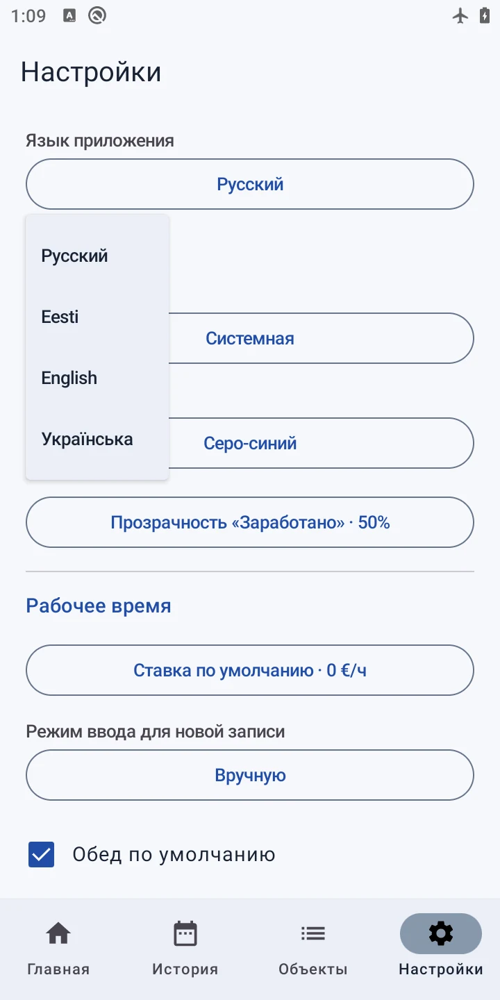

Töövahetused
Sisesta vahetuse algus- ja lõpuaeg või kestus käsitsi. Lõunapausi kestus määratakse iga objekti jaoks eraldi.
Pane kirja töötunnid, lõunapausid ja objektide tunnitasud. Vaata valitud ajavahemiku kokkuvõtet ning ekspordi aruanded Excelisse.
Laadi alla AndroidileVersiooniandmed pole praegu saadaval.

Sisesta vahetuse algus- ja lõpuaeg või kestus käsitsi. Lõunapausi kestus määratakse iga objekti jaoks eraldi.
Määra objektile värv ja tunnitasu ning arhiveeri lõpetatud objektid. Salvestatud vahetuse tunnitasu jääb ajalukku.
Vaata vahetusi kalendrist või ajaloost ning töötasu kokkuvõtet objektide ja valitud ajavahemiku järgi.
Pea avansside, piletite, riietuse ja majutuse üle arvestust töötasust eraldi.
Vali aruande keel rakenduse keelest eraldi. Saadaval on eesti, vene, inglise ja ukraina keel.
Salvesta andmed faili ja taasta need varukoopiast. Tööandmed jäävad seadmesse. Saad valida heleda või tumeda teema.

Vahetuse sisestamine Tööobjektid
Tööobjektid Vahetuste ajalugu
Vahetuste ajalugu Kalender
Kalender Statistika
Statistika Eksport Excelisse
Eksport Excelisse Seaded
Seaded
Keele valimineEkraanipildid on tehtud näidisandmetega. Mõni ekraan võib olla teises keeles.
Android võib kuvada hoiatuse, sest APK paigaldatakse väljastpoolt Google Playd. Laadi fail alla ametlikult väljalasete lehelt, kontrolli SHA‑256 summat ja jäta süsteemi kaitse sisse.
Paigaldamine AndroidileTööaja kasutamiseks pole vaja kontot. Vahetused, arvestus, Excel ja varukoopiad töötavad võrguühenduseta. Internetti on vaja siis, kui kontrollid uuendusi käsitsi, laadid APK alla või avad välise lehe.
APK-d levitatakse GitHub Releasesi kaudu. Android võib küsida luba brauserile või failihaldurile, millega faili avad.
Loo seadetes varukoopia, kanna fail uude telefoni ja taasta see Tööaja rakenduses.
Peagi saadaval